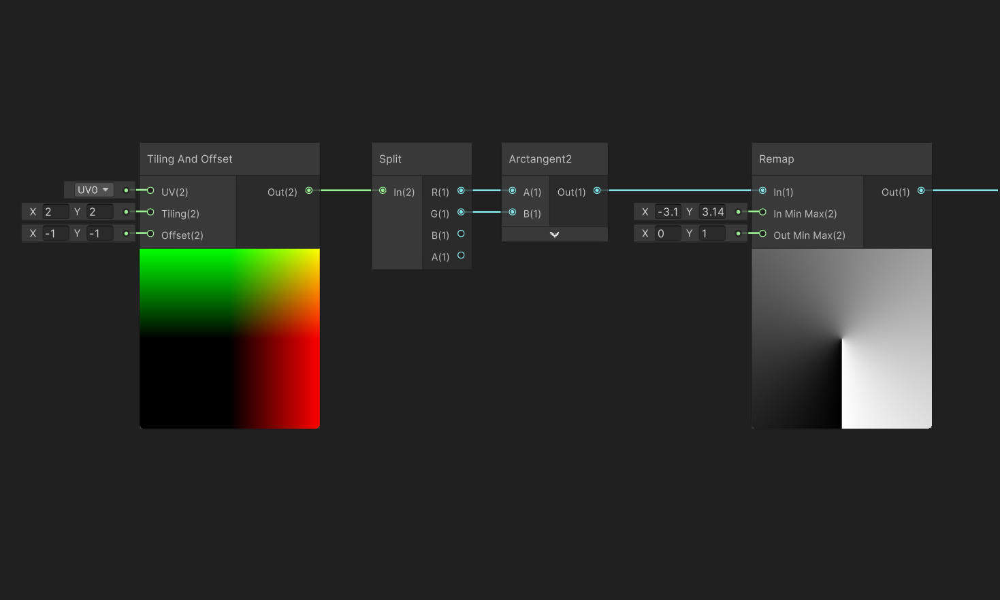

Welcoming the Worldeater
This is a brief overview of my submission for the 55th Ludum Dare game jam, including tutorials for some of the interesting elements we made. I think the game turned out surprisingly fun for a 3 day project, and I would love for you to try it out on our LD game page, or...
Click here to play the game!
Contents:

Overview
The theme for the LD game jam was 'Summoning', so the original idea for 'Welcoming the Worldeater' was to make a cool summoning circle effect that summons different demons for you. I also recently saw a fun little game which was an autoclicker (like cookie clicker), but with a bit more of a story, and the fun twist of actually ending, so I decided to make something with a similar concept.
Thus I decided on an idea: 'Summon minions to help you summon more minions". I tried a few versions with different numbers of currencies or circles, and different ways to summon and use the minions, but after realising I had three days to make the game I decided on one circle, four resources, four togglable runes, and sixteen minion types (one for each combination of runes).
The main problems I had to solve while setting this game up were making the shaders for the circle, making the code to draw the circle based on the players mouse/finger, and then adapting that code to also allow minons to draw the circle.
Making the Summoning-Circle Shader
The centerpiece of this game is the summoning circle, which I wanted to light up underneath the players finger (or mouse) as they were drawing it. Unfortunately fill effects are not supported on sprites like they are on UI images, so I had to make some custom shaders to achieve this effect.
How to make a radial fill shader:
The main way the shape of any image is changed is by setting the opacity (alpha) to zero where you don't want the image to be seen. Working backwards,
as long as we have a value that is different in the places we want the image to be cropped, we can use a rounding node like 'step' or 'floor' to get
a binary 0/1 value, and then multiply the image alpha by it.
For the radial fill effect, this value needs to get bigger as we go around the circle, so to do this we will use the ArcTangent2 function - which takes
a 2D co-ordinate and returns its angle around a circle - and feed in the UV coordinates of the sprite.
This does give us a radial gradient, but it's centered around the bottom left of the sprite instead of the middle, and it has a range of 0 to Pi instead of 0 to 1.
To fix these we can use the Tiling and Offset node to offset the co-ordinates to the center, and the remap node to change the range of the new values from 0-Pi to 0-1.
Now we can actually change how filled the image is by adding a float to the value just before the rounding function. For maximum usability, we can make this property a slider float with a range of 0 to 1.

Finally, we need to use the actual sprite for the color, and factor in the original alpha of the image. At this point we can also allow our material to work with the built in color property of sprites by making a property called _Color, and multiplying our texture values by it before we use them.
Extra features
Customizable starting angle:
Add a 'StartAngle' float (again as a 0-1 slider), then use it as the angle in a 'rotate' node with a center of (0.5, 0.5). I prefer the default to be the top of the circle like a clock, so I also added 180 to the value first.
Clockwise toggle:
Making the fill go anticlockwise instead of clockwise can be done by negating the x-component of the uv just before it goes into the arctan2 node. This will not effect the start angle however, so we'll also have to negate that. To make things as easy as possible I made a custom function that converts a bool variable into either 1 or -1 so that we can just multiply our values by it directly to negate them.
Bloom fill:
To make the material fill from the center out instead of around the circle, we can use a distance function to generate our gradient instead of arctan. Then we need to decide if a fill value of 1 should fill the whole sprite, or just fill a circle that touches the edges of the sprite. Since the use-cases in my game are all circles, I'll make it touch the edges, but for an effect that works better with square images you should multiply the value by sqrt(2).